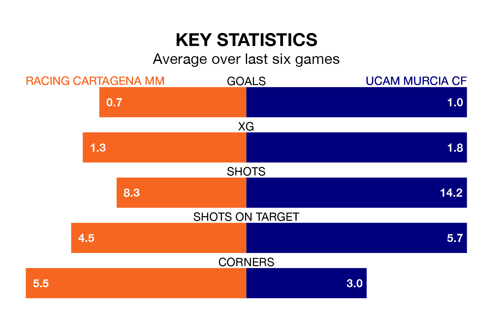

UCAM Murcia CF travel to Racing Cartagena MM on early Sunday in the Segunda División RFEF Group 4.
The visitors come into the game on the back of a draw in their last match, having tied with Linense 1-1 at home, with a goal from Albert Luque.
Racing Cartagena MM, meanwhile, won their last match, 1-0 against Vélez.
With 18 goals in 30 games so far this season, Racing Cartagena MM are the league's lowest scorers with 0.6 goals per game. But they are conceding fewer than average too, letting in 24 goals at a rate of 0.8 per game.
UCAM Murcia, meanwhile, are average scorers, with 1.0 goal per game. They have also conceded 1.0 goal per game.
The home side are 12th in the table after 30 games, of which they have won eight and drawn 12, earning 36 points.
The visitors are four places ahead of Racing Cartagena MM in eighth, with 11 wins and eight draws putting them on 41 points.
Racing Cartagena MM are in mixed form in the Segunda División RFEF Group 4, with two wins and a draw from their last six games.
With two wins and two draws over that period, UCAM Murcia's form is slightly better – they have taken eight points from 18, compared to the hosts' seven.
In the last three years, Racing Cartagena MM and UCAM Murcia have played each other on three occasions. UCAM Murcia won two of them and they drew once.
Their last meeting was on December 3, when UCAM Murcia won 2-1 at home.
Updated: 11:20 (UTC), 09/04/24